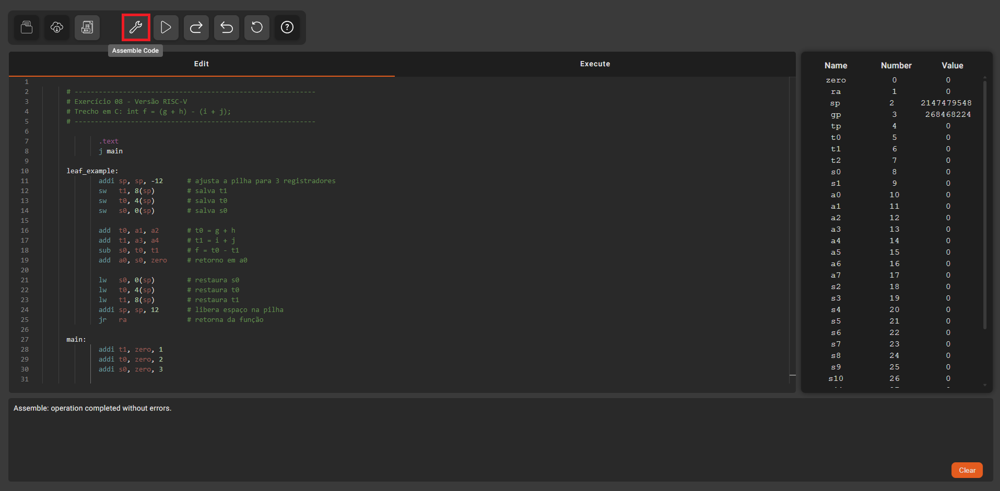

Consolidar o aprendizado da linguagem Assembly RISC-V e compreender como as instruções de suporte a procedimentos são executadas.
# ------------------------------------------------------------
# Exercício 08 - Versão RISC-V
# Trecho em C: int f = (g + h) - (i + j);
# ------------------------------------------------------------
.text
j main
leaf_example:
addi sp, sp, -12 # ajusta a pilha para 3 registradores
sw t1, 8(sp) # salva t1
sw t0, 4(sp) # salva t0
sw s0, 0(sp) # salva s0
add t0, a1, a2 # t0 = g + h
add t1, a3, a4 # t1 = i + j
sub s0, t0, t1 # f = t0 - t1
add a0, s0, zero # retorno em a0
lw s0, 0(sp) # restaura s0
lw t0, 4(sp) # restaura t0
lw t1, 8(sp) # restaura t1
addi sp, sp, 12 # libera espaço na pilha
jr ra # retorna da função
main:
addi t1, zero, 1
addi t0, zero, 2
addi s0, zero, 3
addi a1, zero, 4 # g
addi a2, zero, 7 # h
addi a3, zero, 2 # i
addi a4, zero, 1 # j
jal leaf_example # chama leaf_example
nop # resultado em a0
Clique no botão Assemble para montar o programa.
Faça a execução passo-a-passo do programa e, a cada instrução, preencha a tabela abaixo cada vez que o valor de um registrador ou posição da memória de dados for modificado.
| Antes da execução da instrução |
Depois da execução da instrução |
|||||||||||||
|---|---|---|---|---|---|---|---|---|---|---|---|---|---|---|
| PC | Instrução | f | g | h | i | j |
Segmento de Dados (Pilha - sp) |
|||||||
| R10 | R11 | R12 | R13 | R14 | R1 | R2 | R5 | R6 | R8 | |||||
| (a0) | (a1) | (a2) | (a3) | (a4) | (ra) | (sp) | (t0) | (t1) | (s0) | 0x7FFFEFF0 | 0x7FFFEFF4 | 0x7FFFEFF8 | ||
| 0x00000000 | 0x00000000 | 0x00000000 | 0x00000000 | 0x00000000 | 0x00000000 | 0x7FFFEFFC | 0x00000000 | 0x00000000 | 0x00000000 | 0x00000000 | 0x00000000 | 0x00000000 | ||
OBS: Salve o PDF em formato A2 e Paisagem para garantir que todas as informações da página fiquem visíveis
Se desejar reiniciar o programa, clique no botão Reset.